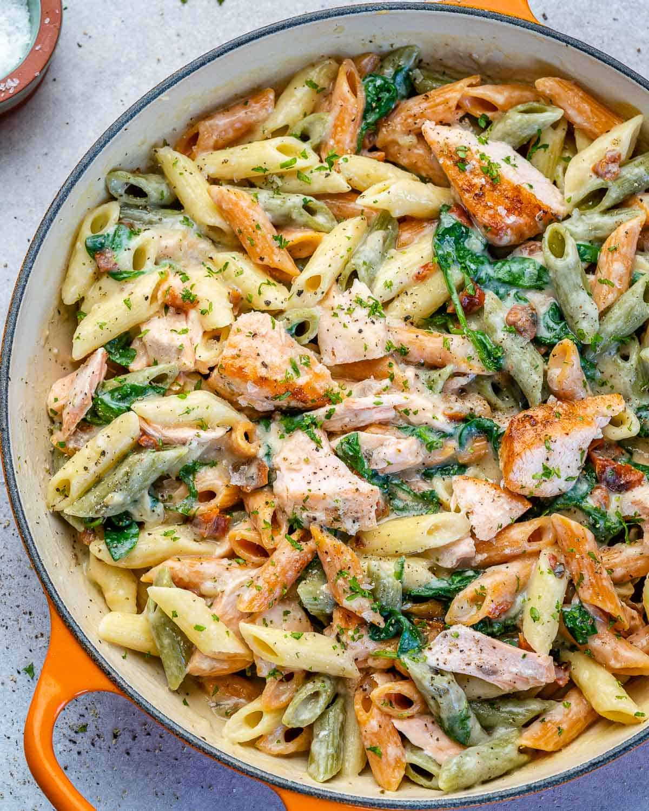

Salmon Alfredo

Grilled salmon with penne pasta and alfredo sauce
This delicious seafood dish is easy enough for even beginner chefs! The recipe can be broken down into three steps: the pasta, the salmon, and the sauce. If you approach the recipe in this way, cooking it becomes a breeze!
Another great thing about this dish is that you can substitute your favorite pasta! Penne is my personal favorite, but if you prefer linguine or spaghetti, feel free to use that instead! I recommend a noodle that holds sauce well, like fettucine or linguine, instead of thinner pasta like angel hair or spaghetti.
Ingredients
- 1 lb salmon fillet
- 16 oz penne pasta
- 1 cup grated parmesan cheese
- 1/4 tbsp unsalted butter
- 1 pint half & half
- 1 1/2 tbsp olive oil
- 4 cloves garlic, minced
- 1 tsp dried oregona
- 1/2 tsp paprika
- 1/4 tsp black pepper
- 1/2 tsp salt
- 1/4 tsp lemon juice
Steps
- Bring a large pot of water to boil and cook the penne according to the instructions. Sprinkle a few pinches of salt into the water before adding the pasta. Drain and set aside after the pasta finishes boiling.
- Place the salmon fillet on a cutting board. Rub 1/2 tbsp olive oil over the fillet.
- Top the fillet with oregona, paprika, black pepper, salt, garlic, and lemon juice.
- Heat 1 tbsp olive oil in a non-stick pan over medium heat. Let the pan heat 2-3 minutes before adding the olive oil.
- Place the fillet on the pan and sear for 5 minutes. Flip and sear the other side for 5 more minutes. Remove from pan and set aside once cooked.
- In the same pan, melt 1/4 tbsp butter and pour in 1 pint of half & half. When the sauce begins to boil, add the pasta.
- Sprinkle in salt and pepper, add in some minced garlic, and add the cooked salmon fillet.
- Turn the heat to low, and add the 1 cup grated parmesan cheese, and mix thoroughly. When there is hardly any liquid in the pan, place the dish in a serving bowl.
- Enjoy!